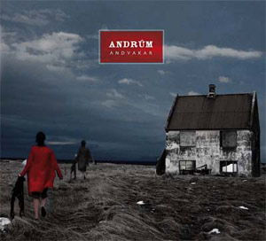

Andvakar (2008). Cover art by Birkir Brynjarsson, photo by Bjartmar Guðmundsson.Andvakar
- Release date: August 2008
- Track listing:
- 1. Andvakar (11:26)
- 2. Nozinan (5:36)
- 3. Report (5:16)
- 4. Hugurinn Reikar (6:02)
- 5. Pictures (10:18)
- 6. Móab (9:34)
- Total length: 48:12
- Produced: by Andrúm
- Recorded: by Aron Arnarsson at Studio Sundlaugin, Hljóðriti Studio & Studio FÍH.
- Mixed: at Studio Hljóðriti by Aron Arnarsson.
- Mastered: at Studio Írak by Bjarni Bragi, except Tracks 2 & 3 by Axel Árnason.
- Line-Up:
- Arnar: Bass
- Birkir: Guitar, Synth, Hammond Organ, Piano, Sounds
- Jóna Palla: Vocals
- Magnús Freyr: Drums
- Ragnar: Guitar, Sounds, Didgeridoo, Backing Vocals on Track 3
- Guest Appearances:
- Védis Guðmundsdóttir: Flute
- Doddi: Cello
Below is an audio player containing all of the tracks on the album.
Just click on the play button! (Adobe flash is required)
Andvakar